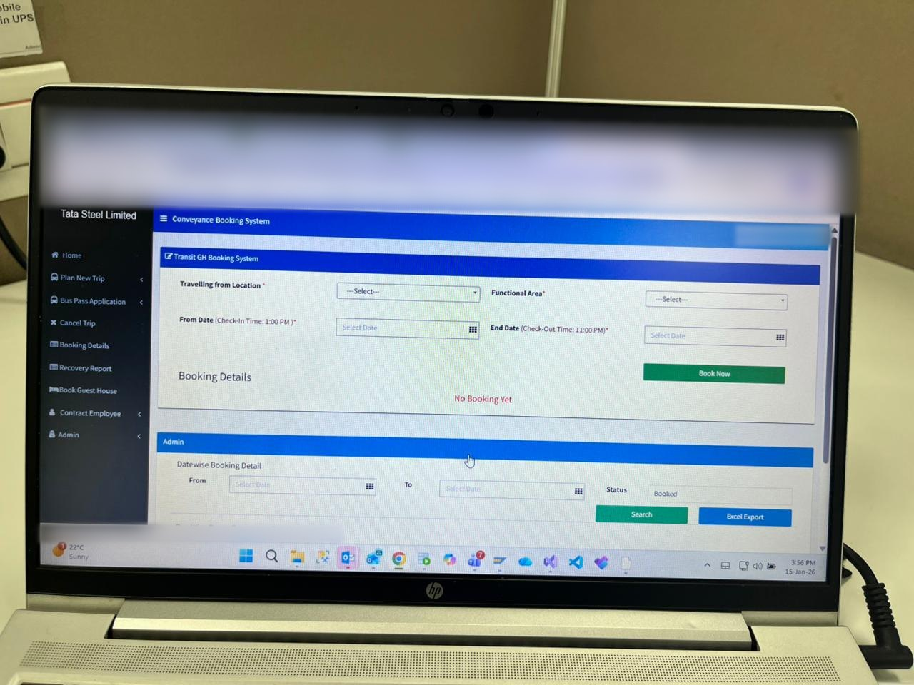
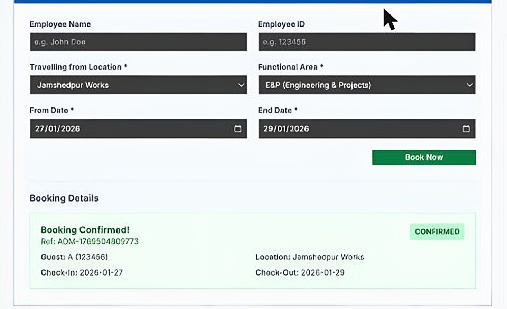
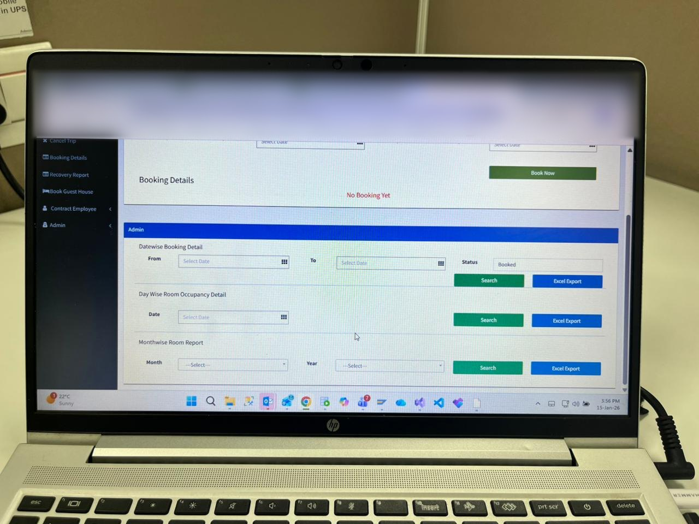
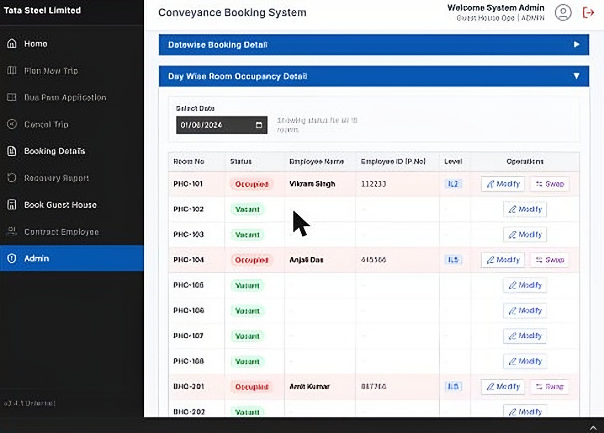
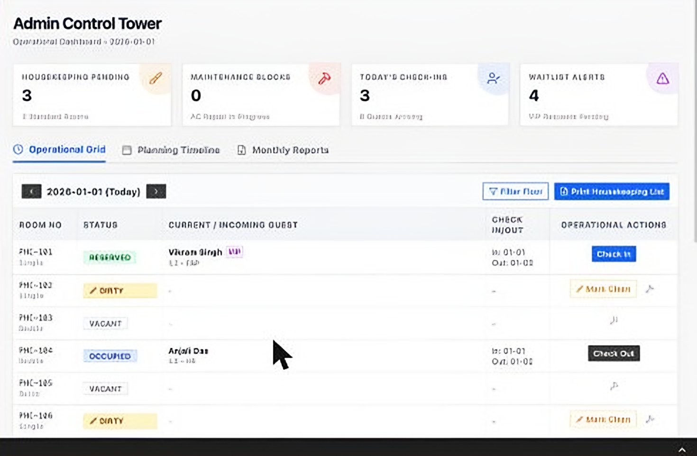
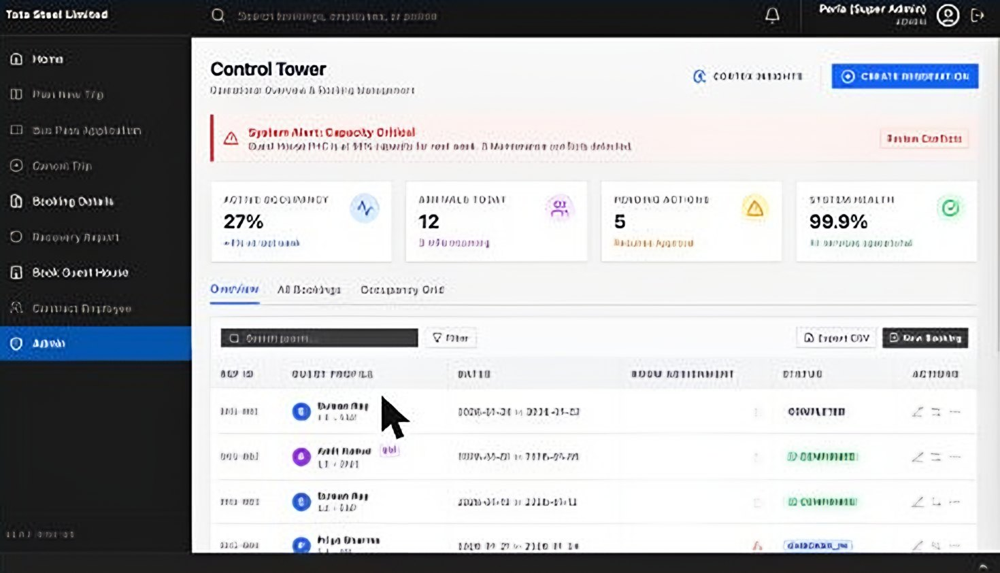
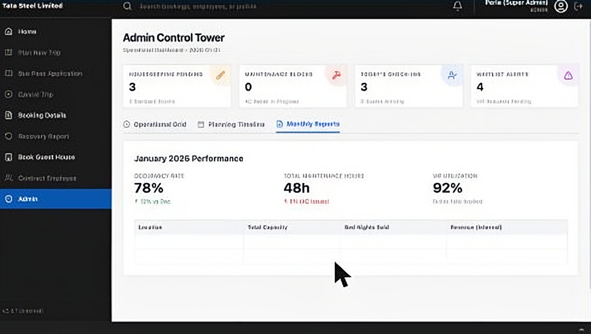

Client work · Tata Steel · guest house booking · 2021 to 2024
Tata Steel ran guest house booking on calls, emails and Excel. I designed and built the system that replaced it, solo.
Employees travelling to the Kalinganagar plant in Odisha book a stay in four fields and get a confirmed booking at once. Guest house admins run every room, every day, from one table.
- 30,000people a year
- 2,000–3,000bookings a month
- 3guest houses, one only for vendors
- 1person: design, front end, back end

The problem
People come to Kalinganagar from Jamshedpur, Tata Steel UK and five or six other sites, for projects, audits, training and vendor work. Tata Steel houses them in its own transit guest houses. Their rank decides the room they get, from senior chiefs to contract workers and vendors.
All of it ran on calls, emails and a spreadsheet. A traveller called or wrote to the guest house office, and an admin tracked every room in Excel.
- BeforeA call or an email, then wait. The admin checks Excel, finds a room, writes back.
- AfterThe traveller books in the company app and the booking is confirmed on the spot. The admin sees every room for any day and fixes what changes.
What I had to work with
- One person for design, front end and back end.
- It had to live inside the company's existing Conveyance Booking System, on the intranet.
- Requirements came as lists from stakeholders, with no time for user research.
- Many ranks with different room entitlements, all in one interface.
Decision 1
Remove approvals. The system assigns the room.
In many company systems a booking waits in a queue until a manager or the admin approves it, and then the admin picks a room. At 65 to 100 bookings a day, that is one person doing nothing but approving and assigning.
- AApproval queue. The booking waits for an approver, then the admin hand-picks a room.
- BPick your own room. The traveller chooses from free rooms, like a hotel website.
- CInstant confirmation, the system picks the room. Every booking confirms at once, and a room is assigned from what is free, which guest house, and the traveller's rank.Shipped
Why C. A made every traveller wait on a person and turned the admin into a full-time approver. B let two people grab the same room at the same moment, and invited arguments over who deserves the better room. C confirms instantly; I wrote the room assignment logic myself.
What it cost. Travellers can't ask for a specific room, like a ground floor or near the lift, so those requests became calls and manual swaps. The room number isn't shown at booking time either.

Decision 2
How much power should an admin have?
Real life gets in the way of bookings. An AC breaks. Work runs long and a guest needs two more nights. Someone asks for the ground floor. The admin has to change bookings by hand, and every manual change risks two people in the same room on the same night, found out only when both turn up with their bags.
- AFull control. The admin can change anything, even put a guest in a room that is taken.
- BView only. The admin sees bookings and downloads reports; every change goes through the normal booking flow.
- CControl with a safety check. Move a guest, change dates, swap two guests, block a room for repairs. The system refuses any change that overlaps another booking in that room.Shipped
Why C. A trusts the admin completely, so one slip makes a double booking. B is safe but useless in an emergency; admins would go back to Excel and WhatsApp. C gives admins the tools they need, with a check underneath.
What it cost. Extra validation code. True exceptions, like an extra bed in a suite for one night, can't be handled inside the system, and there was no record of who changed what.

Decision 3
Filters: one request, not many.
Admins look up bookings all day, across thousands of records on an intranet that can be slow. They narrow the list by dates and by status: confirmed, cancelled, completed. The question was what happens each time a filter changes.
- AReload on every change. Each date and each status is a fresh request to the server.
- BSet everything, fetch once. The admin sets all the filters, then one search fetches and draws the results.Shipped
Why B. One request instead of three or four: less waiting on a slow network, less load on the server.
What it cost. One extra click. Every report has its filters plus a Search button.

What I would do differently
I built exactly what was asked, and that was the mistake.
The requirements came as lists: the fields on the booking form, and three reports for admins. Every conversation with stakeholders cost build time, so I built every field and every report exactly as listed.
The cost. Two of the reports overlap heavily, one is cluttered and hard to read, and I never learned why it was needed. Some moments got no design at all: when every room was full, the traveller saw a basic error with no next step.
What I learned. The third report shows the payoff of asking why: it fed finance directly, to recover the cost of stays. I now start every report with one question: what decision does this support?
Looking back · a concept, not shipped
Design the platform, not the page.
Guest house booking was being folded into one larger travel app beside cab booking, bus passes and trip planning. My first version had no shared design system; each screen was styled on its own. It also left a real problem open: the ghost booking. A guest books and never turns up, the room is empty, and the system still can't give it to anyone.
The proposal: a shared design system first, with one colour per booking status, then an operations board that shows every room's live state, no-shows included.



